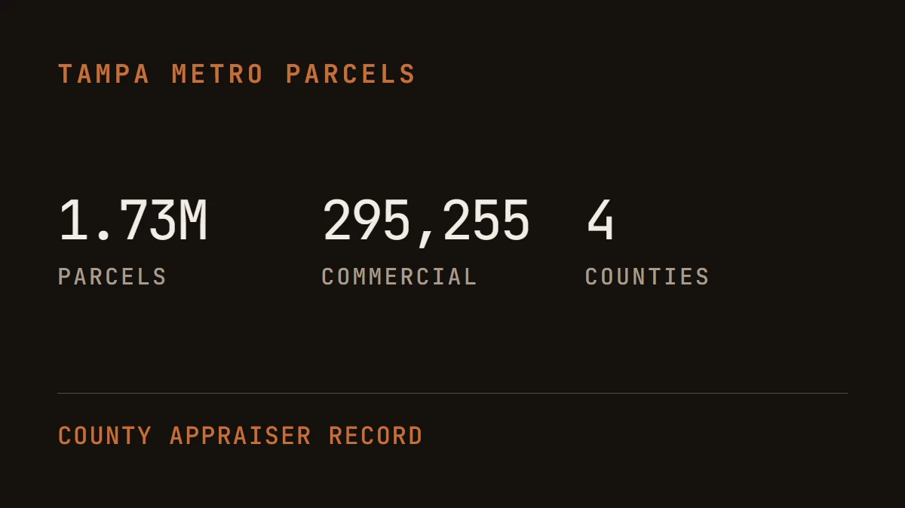

Four counties of property records, inside the chat window.

A Tampa broker used to answer one question, who owns this building, what did it last sell for, what is it worth, by opening the county appraiser website, searching a parcel, copying figures into a spreadsheet, then doing it again for every comparable. We connected those records straight to the assistant the broker already talks to. Now they ask, and the answer comes back with the parcel, the owner, the sale history and the comparables already assembled.
A connector is the piece that makes that possible. An AI assistant is good with language and knows nothing about your county property roll. The connector is a supervised door to one specific set of records, so every answer comes from the roll itself. This one covers Hillsborough, Pinellas, Pasco and Polk: 1,730,745 parcels, 295,255 of them commercial.
Signing in takes one click in a browser. The connection knows who is asking, which is what lets it write a contact, a deal or a finished document rather than only read one.